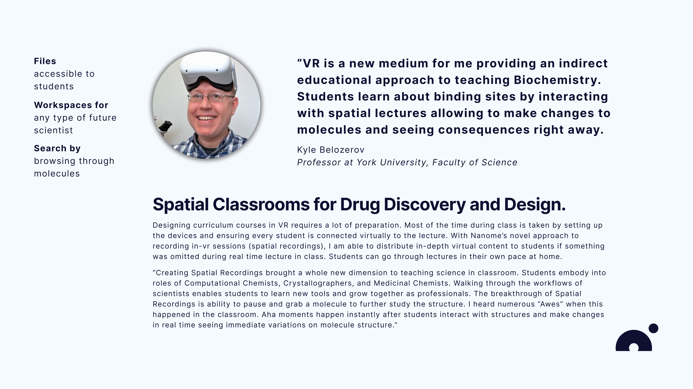
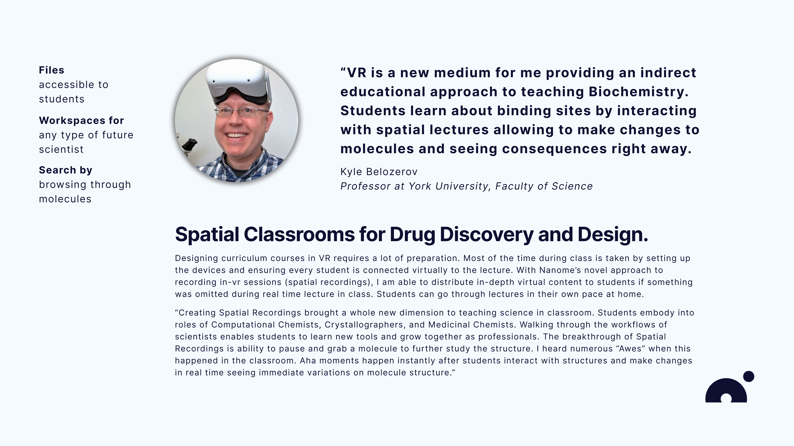

Contribution to Nanome
Working at Nanome was a lot of fun and exploration of VR as an applied technology. I collaborated with scientists, engineers, designers and C-level team to craft prototype designs for the team. I was responsible for researching interactions inputs in Mixed Reality, building a Large Language Model user feedback data processing software, haptics, sounds, XR & 2D User Interface Research. Fortunately, my research was heavily used by the team designing Nanome 2.0. My initiative with feedback automation allowed the team to focus on the software design in critical times for the company. The opportunity to automate user feedback gathering and qualitative user data sorting was a magical solution to Nanome.
User Research

Nanome has 5 main categories of software users: Crystallographers, Computational Chemists, Biologists, Professors, and Students. The first three work directly with software to identify and find new patterns in molecular structures for Drug Discovery and Design. Professors and Students utilize the software for research and study purposes. I conducted research studies and playtesting sessions with Professors to gather user experience data and identify potentials for improvement of Nanome Software. The users provided an invaluable feedback describing their process of working in Nanome XR and 2D applications. The qualitative data was categorized into subsections and marked relevantly to the User Interface and Experience research. Surfacing the issues with iconography, typeface, and experience design, I prototyped a new set of wireframes. Additionaly, a new set of personas requirements and feedack was derived from these sessions.
 


Prototyping the interfaces for XR and 2D
I've built spatial interfaces with ShapesXR and 2D prototypes using Figma. Files, Search, and Workspaces were the primary focus in my research and prototyping. Visual design of the software got inspiration from Google Material Design 3 incorporating iconography, typefaces, and the logic behind the user interface. Building with components of GMD 3 accelerated the prototyping time and allowed to research best practices of UI design for 2D applications. Additionaly, a similar design components library was gathered to design XR software. Researching File Management, I looked through Google Drive, Cloud Server Software, and other data sharing applications to define requirements for an internal newly designed File Management System. The files were supposed to be interchangable between the local machine, servers, and XR hardware. The ideal interaction of files should be a "drag and drop" from one device to another. Workspaces are an overview of current projects of the user allowing the track tasks and quick previewing the requirements in each project. Files, Activity, and VR Preview of the project allows the user to quickly wrap their head around the work they are doing or supposed to do. Having clarity in such projects is crucial for the user who is working on complex pharmaceutical research. Search is another important component of the 2D application. The inspiration was to have a search like "Spotlight" in MacOS across the whole application. Search results would show different molecular structures available for preview in VR/XR, lists of files the user searched for, and people inside the company the user can reach out to for faster connection with coworkers.